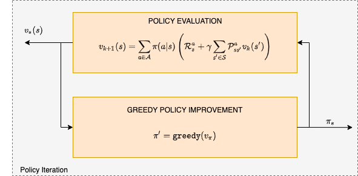
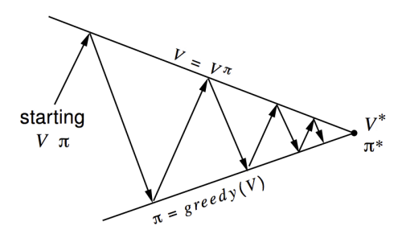
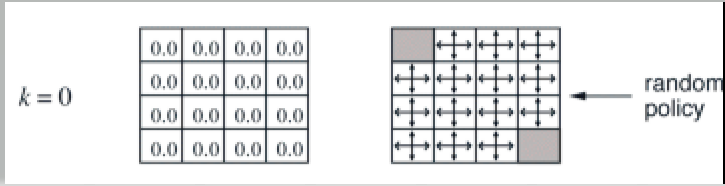
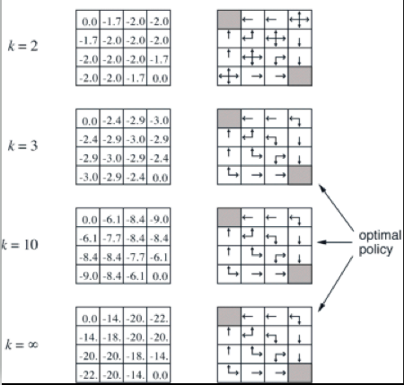

Policy Iteration#
In this section we develop dynamic programming algorithms for the so called planning problem (which is RL without learning) where we are dealing with a perfectly known MDP.
In the Bellman expectation backup section we have derived the equations which allowed us to efficiently compute the value function.
We have seen also that the Bellman optimality backup that are non linear and need to be solved using iterative approaches - their solution will result in the optimal value function \(v_*\) and the optimal policy \(\pi_*\).
In policy iteration, given the policy \(\pi\), we oscillate between two distinct steps as shown below:

Policy iteration in solving the MDP - in each iteration we execute two steps, policy evaluation and policy improvement
In the policy evaluation (also called the prediction) step we estimate the state value function \(v_\pi ~ \forall s \in \mathcal S\).
In the policy improvement (also called the control) step we apply the greedy heuristic and elect a new policy based on the evaluation of the previous step.
This is shown below and we defer discussion on convergence until we treat later the generalized policy iteration.

Policy and state value convergence to optimality in policy iteration. Up arrows are the evaluation steps while down arrows are the improvement steps. Although the real geometry is much more complicated than this, the diagram suggests what happens: Each process drives the value function or policy toward one of the lines representing a solution to one of the two goals. The goals interact because the two lines are not orthogonal. Driving directly toward one goal causes some movement away from the other goal. Inevitably,however, the joint process is brought closer to the overall goal of optimality.
It can be shown that the policy iteration will converge to the optimal value function \(v_*(s)\) and policy \(\pi_*\).
Gridworld policy iteration example#
The grid world example shown below is characterized by:
Not discounted episodic MDP (γ = 1)
Non terminal states 1, …, 14
One terminal state (shown twice as shaded squares)
The action that the agent takes, cause the intended state transition with probability 1.0. Actions leading out of the grid leave state unchanged.
Reward is −1 until the terminal state is reached
Agent follows a uniform random policy \(\pi(north|.) = \pi(south|.) = \pi(east|.) = \pi(west | .) = 0.25\)

The terminal states are shaded. The reward is \(-1\) on all transitions until the terminal states are reached. The non-terminal states are \(S_1,S_2,...,s_{14}\).
We begin with random values (or 0.0) and a random policy \(\pi\)

Initial values and policy for policy iteration
Policy Iteration (Step 1)#
Find value function based on initial random policy:
The result is as shown below:

Policy Iteration (step 2)#
Next we compute the policy:
The result is shown below for \(k=2\).

Another Gridworld policy iteration example#
A more graphical way to understand how policy iteration functions (and other algorithms as well) is through this repo - see 1-grid-world/1-policy-iteration that depicts a more elaborate gridworld.